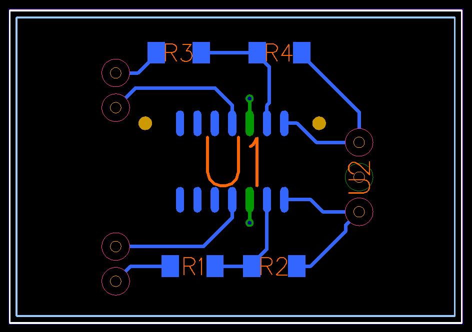
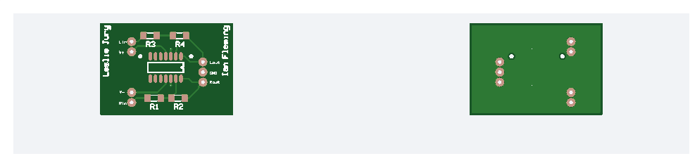
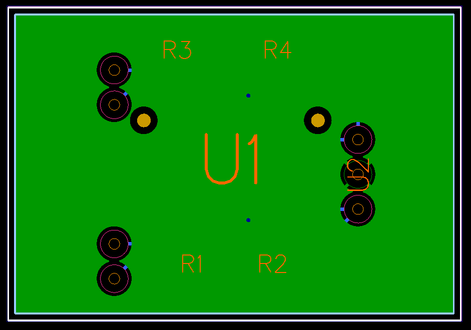
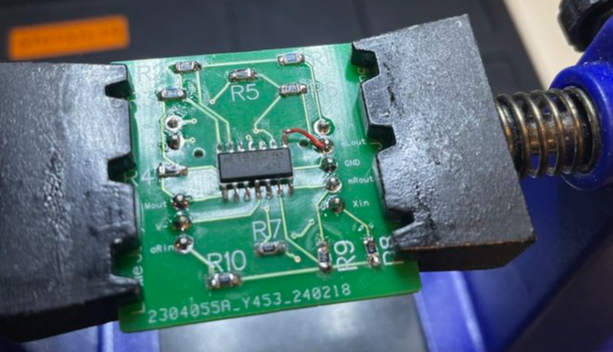
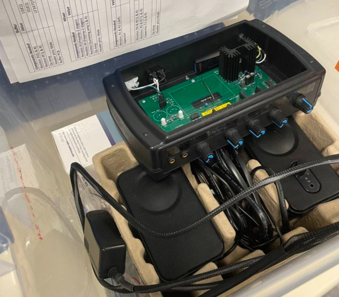

In this project, I designed and fabricated a printed circuit board (PCB) for an audio amplifier. I made factory ready gerber files and sent them to a manufacturer. The most interesting step to me was the routing, it wasn't very challenging but I know it will be more challenging in the future, and this is good practice for me.
